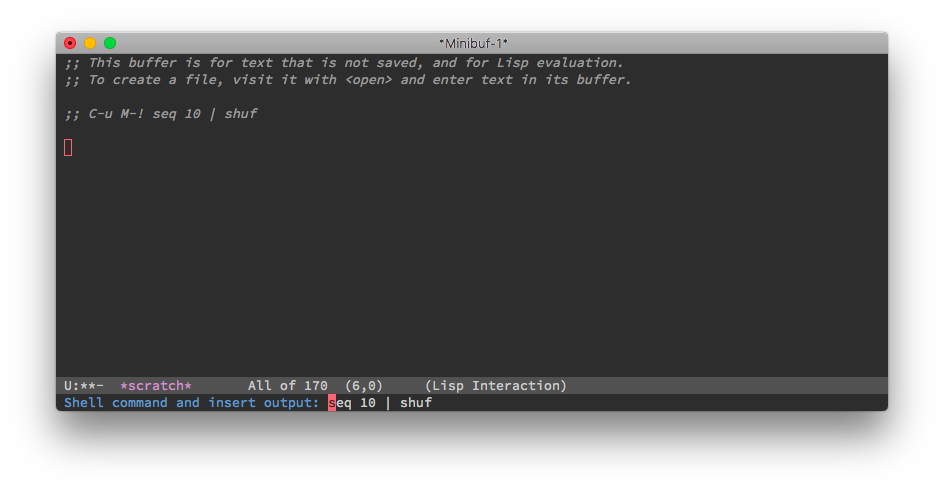
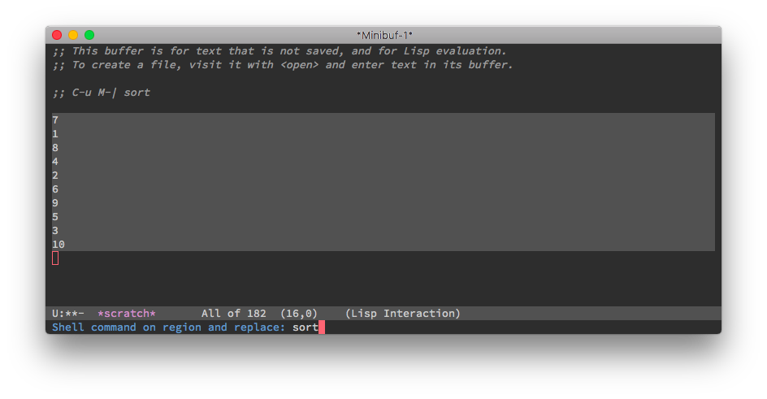

友好一点的 shell-command 提示符
Posted on 2017.08.26, by Chunyang Xu
C-u M-! (shell-command) 会提示输入一个 Shell 命令然后插入其输出，默认的提示符没有反映出这一特性，我觉得在提示符中提示下会更友好：


为此我给 Emacs 提交了一个补丁，可惜的是并没有被接受，所以我在自己的配置中定义了一个 Minor Mode 来实现它：
(defun prompt-watcher ()
(let ((prompt-fn
(lambda (prompt)
(let ((inhibit-read-only t)
(props (text-properties-at (point-min))))
(erase-buffer)
(insert prompt)
(set-text-properties (point-min) (point-max) props)))))
(cond ((eq this-command 'shell-command-on-region)
(and (equal (minibuffer-prompt) "Shell command on region: ")
current-prefix-arg
(funcall prompt-fn "Shell command on region and replace: ")))
((eq this-command 'shell-command)
(and (equal (minibuffer-prompt) "Shell command: ")
current-prefix-arg
(funcall prompt-fn "Shell command and insert output: ")))
((eq this-command 'eshell-command)
(and (equal (minibuffer-prompt) "Emacs shell command: ")
current-prefix-arg
(funcall prompt-fn "Emacs shell command and insert output: ")))
((eq this-command 'async-shell-command)
(and (equal (minibuffer-prompt) "Async shell command: ")
current-prefix-arg
(funcall prompt-fn "Async shell command and insert output: "))))))
(define-minor-mode prompt-watcher-mode
"Watch the minibuffer prompt and customize if asking."
:global t
(if prompt-watcher-mode
(add-hook 'minibuffer-setup-hook #'prompt-watcher)
(remove-hook 'minibuffer-setup-hook #'prompt-watcher)))